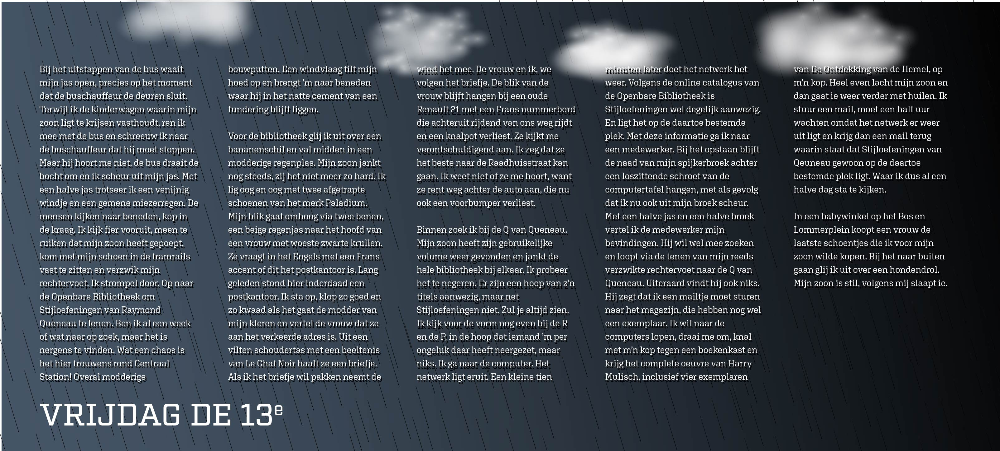

99stories
Voer hier de code van je verhaal in!
Blauw

Moe
De buschauffeur port me wakker. We zijn bij de eindhalte, Centraal Station. Ik stap uit en duw de kinderwagen voort waarin mijn zoon ligt te slapen...
Lees verderRood
Vrijdag de 13e
Bij het uitstappen van de bus waait mijn jas open, precies op het moment dat de buschauffeur de deuren sluit. Terwijl ik de kinderwagen waarin mijn zoon ligt te...
Lees verderBlauw

Geert Wilders
Een tsunami van forenzen loopt van en naar het Centraal Station in Amsterdam. Ik ben net uit bus 21 gestapt, een prachtige, roomblanke bus 21 die ontsierd werd ...
Lees verderRoze

Alzheimer
h stap uit, euh… Hoe heet het? Zo’n vervoersdinges op wielen. Van de gemeente. Wit met blauw. Kom. Lijn 12. Of was het 21? Ik weet het niet. Ik stap uit en loop achter een ...
Lees verder